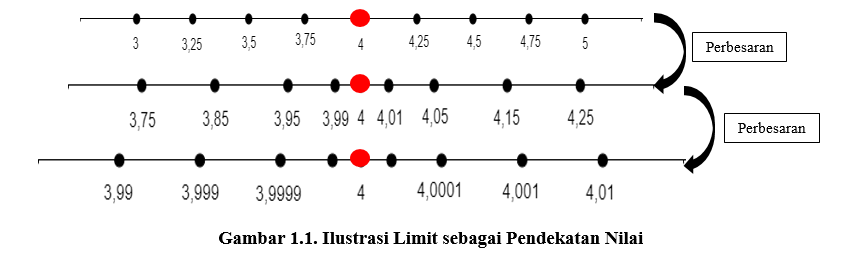

Pada suatu hari Kenzy dan Tasya sedang belajar bersama mengenai materi “Limit Fungsi”. Sebelum mempelajari mengenai limit dari sebuah fungsi, mereka mencari tahu arti dari "limit" dengan menonton video terlebih dahulu.
Setelah mereka menonton video tersebut, Kenzy pun memberikan pertanyaan kepada Tasya yang berkaitan dengan pengertian limit.
Kenzy : “Sya, divideo tadi dijelaskan bahwa limit itu merupakan pendekatan terhadap suatu hal. Nah aku ada pertanyaan nih buat kamu.”
Tasya : “Wah, seru nih.”
Kenzy : “Coba kamu sebutkan bilangan bulat manakah yang terdekat ke bilangan 4?”
Tasya : “Tentu saja jawabannya adalah 3 atau 5.”
Kenzy : “Good. Coba tebak lagi Sya. Bilangan real manakah yang terdekat ke bilangan 4?”
Tasya : “mmm, ....” (Tasya terlihat bingung).
Berdasarkan percakapan diatas, Kenzy bertanya kepada Tasya mengenai bilangan real manakah yang terdekat ke bilangan 4? Jika Tasya menjawab bilangan tersebut adalah 3 atau 5, maka masih ada bilangan real lainnya yang dekat ke bilangan 4, bahkan sampai tak berhingga banyaknya bilangan real yang dekat ke bilangan 4.
Coba perhatikan ilustrasi berikut!

Berdasarkan ilustrasi diatas, pada garis bilangan pertama terlihat bahwa bilangan real yang dekat ke bilangan 4 adalah 3,75 atau 4,25. Namun, jawaban tersebut masih kurang tepat. Jika diperbesar maka akan tampak bilangan real yang lebih dekat lagi ke bilangan 4. Seperti pada garis bilangan kedua ditunjukkan bahwa 3,99 atau 4,01 merupakan bilangan real yang lebih dekat ke bilangan 4. Namun jawaban itu juga masih kurang tepat, karena jika dilakukan perbesaran lagi, maka akan tampak bahwa ada lagi bilangan real lainnya yang lebih dekat ke bilangan 4. Seperti pada garis bilangan ketiga, tampak bahwa 3,9999 atau 4,0001 merupakan bilangan real yang lebih dekat lagi ke bilangan 4. Jika dilakukan perbesaran lagi tentu akan ada lagi bilangan real lainnya yang lebih dekat ke bilangan 4.
Dari ilustrasi diatas, pada garis bilangan terdapat sekelompok bilangan real yang mendekati 4 dari kiri ataupun dari kanan. Jika x dimisalkan sebagai sekelompok bilangan real yang mendekati 4 maka dapat disebut x mendekati 4 atau dapat ditulis x 4. Jika x adalah semua bilangan yang mendekati 4 dari kiri dapat ditulis x  , sedangkan apabila x adalah semua bilangan yang mendekati 4 dari kanan dapat ditulis x
, sedangkan apabila x adalah semua bilangan yang mendekati 4 dari kanan dapat ditulis x  . Pemaparan tersebut merupakan ilustrasi limit sebagai pendekatan nilai. Selanjutnya kita akan mempelajari mengenai limit dari sebuah fungsi.
. Pemaparan tersebut merupakan ilustrasi limit sebagai pendekatan nilai. Selanjutnya kita akan mempelajari mengenai limit dari sebuah fungsi.